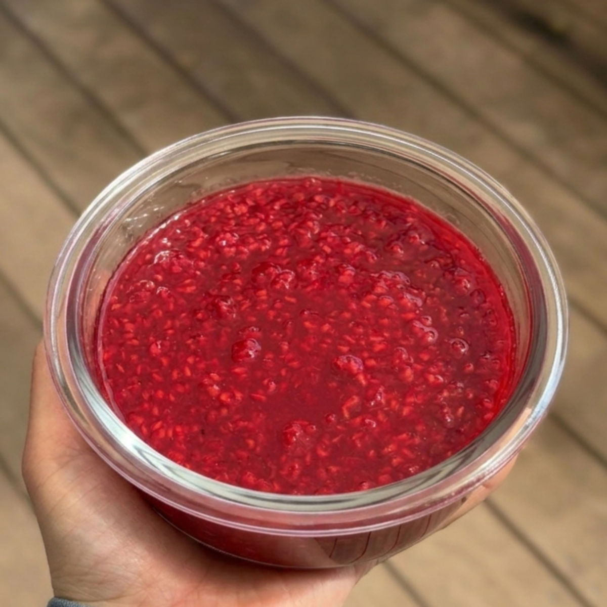

ריבות שונות מפירות יער בפחות מ-30 דקות
עודכן: 10 במרץ
טבלת ערכים תזונתיים בקירוב:
עבור ריבות עם סיווטאנגו ו2 כפות מיץ לימון
ריבת פטל:
| ערכים | כף (20 גרם) | 100 גרם |
|---|---|---|
| קלוריות | 6.8 | 34.3 |
| פחמימות | 1.3 | 6.8 |
| חלבונים | 0.3 | 1.7 |
ריבת פירות יער:
| ערכים | כף (20 גרם) | 100 גרם |
|---|---|---|
| קלוריות | 11.6 | 58 |
| פחמימות | 2 | 10 |
| חלבונים | 0.32 | 1.6 |
ריבת תותים:
| ערכים | כף (20 גרם) | 100 גרם |
|---|---|---|
| קלוריות | 8.6 | 43 |
| פחמימות | 1.5 | 7.7 |
| חלבונים | 0.2 | 1 |
ריבת פירות יער במרקם מושלם שמתאימה לכולם. היא דלה בקלוריות, ידידותית לקיטו, דלת פחמימות ופשוטה להכנה. מושלמת על יוגורט, מעל קינוחים או פשוט ככה עם כפית.

המתכון:
כמות: קופסה קטנה (כ- 240 גרם)
מרכיבים:
300 גרם פטל קפוא \ מיקס פירות יער קפואים \ תותים קפואים (זה בדיוק חבילה אחת בסופר)
2 כפות סוויטאנגו \ 2 כפות דבש (שימו לב: דבש אינו מתאים לסוכרתיים ולקיטוגנים)
2 כפות מים
1-2 כפות מיץ לימון ( תלוי בטעם אישי)
הוראות הכנה:
אם בחרתם להשתמש בתותים, חתכו אותם מעט לפני הבישול.
מניחים במחבת על אש בינונית פטל קפוא / פירות יער קפואים / תותים קפואים חתוכים, עם מיץ לימון, מים וסוויטאנגו.
מערבבים היטב את כל המרכיבים עד שהפירות מפשירים ומתחילים להגיר נוזלים.
לאחר כמה דקות של בישול, כשהפירות מתרככים, מועכים אותם מעט בעזרת כף לקבלת מרקם חלק יותר.
מבשלים במשך כ-25 עד 28 דקות תוך כדי ערבוב מתמיד כדי למנוע חריכה בתחתית.
ממשיכים בבישול עד שהתערובת מצטמצמת ומסמיכה; ניתן לבשל כמה דקות יותר במידה ורוצים ריבה ממש סמיכה, רק שימו לב שהיא עוד תסמיך בקירור. ניתן לראות את המרקם שאני הגעתי אליו בסרטון למטה.
במידה ומשתמשים בדבש: בשלו את הריבה קצת יותר, כדי שהיא תהיה קצת יותר סמיכה ממה שמוצג בסרטון, כי דבש פחות מתמצק במקרר בהשוואה לסוויטאנגו.
מסירים מהאש, מניחים לתערובת להצטנן בטמפרטורת החדר ומעבירים למקרר.
סרטון מתהליך ההכנה:
מרקם הריבה בסיום הבישול (היא תתמצק במקרר)